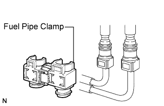
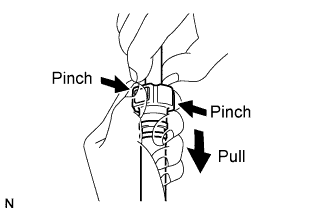
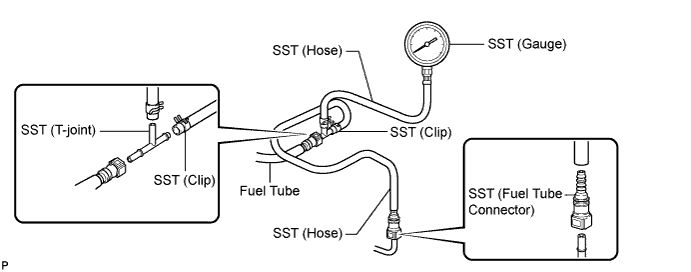

FUEL SYSTEM > ON-VEHICLE INSPECTION |
| 1. CHECK FOR FUEL PUMP OPERATION AND FUEL LEAK |
Connect the intelligent tester to the DLC3.
Turn the engine switch on (IG).
Turn the intelligent tester ON.
Enter the following menus: Powertrain / Engine and ECT / Active Test / Activate the Fuel Pump Speed Control.
Check fuel pump operation.
Check for pressure in the fuel inlet tube from the fuel line. Check that the sound of fuel flowing in the fuel tank can be heard.
If there is no sound, check the integration relay, fuel pump, ECM and wiring connector.
Check for fuel leak.
Check that there are no fuel leaks after performing maintenance anywhere on the system.
If there are fuel leaks, repair or replace parts as necessary.
| 2. CHECK FUEL PRESSURE |
Check that the battery voltage is 11 to 14 V.
Discharge the fuel system pressure (Click here).
Disconnect the cable from the negative (-) battery terminal.
 |
Remove the fuel pipe clamp from the fuel tube connector.
 |
Pinch and pull the No. 1 fuel hose (fuel tube connector) to disconnect it.
Install SST (pressure gauge) as shown in the illustration.

Wipe off any gasoline.
Reconnect the cable to the negative (-) battery terminal.
Operate the fuel pump.
Connect the intelligent tester to the DLC3.
Turn the engine switch on (IG).
Turn the intelligent tester ON.
Enter the following menus: Powertrain / Engine and ECT / Active Test / Activate the Fuel Pump Speed Control / ON.
Measure the fuel pressure.
Start the engine.
Measure the fuel pressure.
Stop the engine.
Check that the fuel pressure remains as specified for 5 minutes after the engine has stopped.
Disconnect the cable from the negative (-) battery terminal (Click here) and carefully remove SST and the fuel tube connector to prevent gasoline from spraying.
Reconnect the No. 1 fuel hose (fuel tube connector).
Check for fuel leaks.
Check that there are no fuel leaks after performing maintenance anywhere on the system.
If there are fuel leaks, repair or replace parts as necessary.